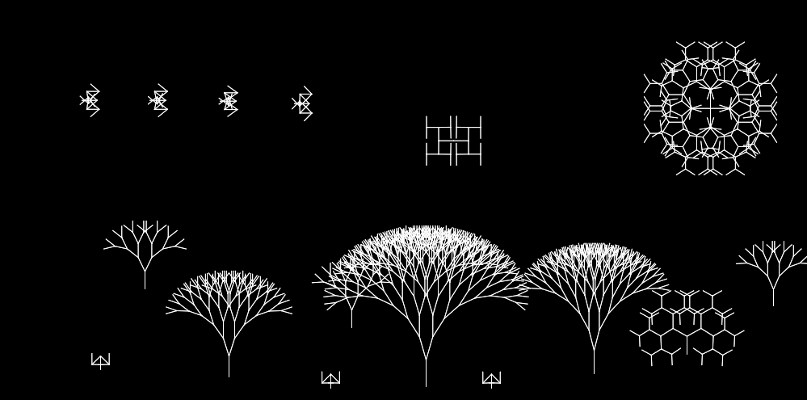
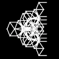

Source Code
Source Code
██████╗ ███████╗███╗ ██╗███████╗██████╗ █████╗ ████████╗██╗██╗ ██╗███████╗
██╔════╝ ██╔════╝████╗ ██║██╔════╝██╔══██╗██╔══██╗╚══██╔══╝██║██║ ██║██╔════╝
██║ ███╗█████╗ ██╔██╗ ██║█████╗ ██████╔╝███████║ ██║ ██║██║ ██║█████╗
██║ ██║██╔══╝ ██║╚██╗██║██╔══╝ ██╔══██╗██╔══██║ ██║ ██║╚██╗ ██╔╝██╔══╝
╚██████╔╝███████╗██║ ╚████║███████╗██║ ██║██║ ██║ ██║ ██║ ╚████╔╝ ███████╗
╚═════╝ ╚══════╝╚═╝ ╚═══╝╚══════╝╚═╝ ╚═╝╚═╝ ╚═╝ ╚═╝ ╚═╝ ╚═══╝ ╚══════╝
██████╗ ███████╗███████╗██╗ ██████╗ ███╗ ██╗
██╔══██╗██╔════╝██╔════╝██║██╔════╝ ████╗ ██║
██║ ██║█████╗ ███████╗██║██║ ███╗██╔██╗ ██║
██║ ██║██╔══╝ ╚════██║██║██║ ██║██║╚██╗██║
██████╔╝███████╗███████║██║╚██████╔╝██║ ╚████║
╚═════╝ ╚══════╝╚══════╝╚═╝ ╚═════╝ ╚═╝ ╚═══╝
Now we get to my two last sketches which go into two completely different directions. First up is Version 9 - The Canvas
With this sketch, I followed an idea of mine to combine all the different kinds of trees into one sketch where you choose between them and then bring them onto the canvas to whatever you want. My initial idea was to draw a landscape by drawing the simple trees on the ground and then draw the tree from version 8 which goes into all 4 directions as the sun.
Just select what kind of tree you want to draw in the select menu below the sketch and then click and drag to modify the tree. When you are happy with how the current tree looks, release the mouse click. Now you can draw the next figure.
Be careful with dragging the mouse to far off the sketch. It still works but you will get performance issues when you try to create a tree with that many branches
To give you some inspiration, this is how one of my canvases looked like. You can go crazy with the figures you put onto the canvas and with the five draw modes you can do quite a lot.
The following picture is also a figure I once created. But ever since then, I could not recreate it.
And this is what I like about how this version turned out to be. On the one side, you have these simple rules on how to create this tree that is the basis for all this. On the other hand, given all this space to modify it, you can put a lot of completely different figures on one canvas. And in the end, everything every figure is somewhat symmetric on its own because of the same angle for all branches of one figure. This gives the whole canvas a beauty without having the user to do anything.